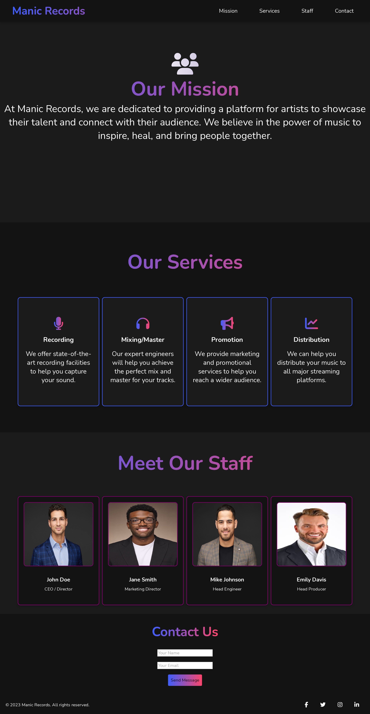

Projects
Here are some of the projects I've worked on:

Manic Records
A responsive website for Manic Records, built using HTML and CSS to showcase music releases and artist information.

Club Alaray
A modern website for Club Alaray, featuring interactive event listings and a sleek design using HTML, CSS, and JavaScript.

Website Design Styles
A curated collection of modern website design styles, demonstrating various layouts, color schemes, and UI components using HTML and CSS.